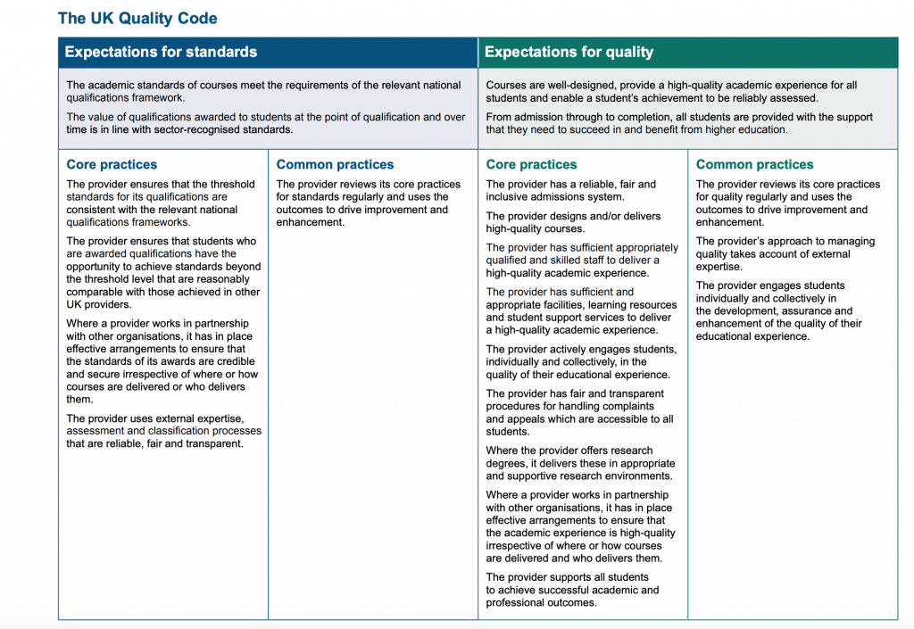

12.1 O que entendemos por qualidade ao ensinar na era digital?


Se acompanhou o percurso pelos capítulos anteriores deste livro, o leitor foi exposto a um volume significativo de informação: dados de pendor filosófico, empírico, tecnológico e administrativo, estruturados em torno das necessidades dos estudantes na era digital. Chegou o momento de condensar estes elementos num conjunto prático de etapas de ação que permitam aplicar tais ideias e conceitos nas circunstâncias quotidianas da docência.
Deste modo, o objetivo deste capítulo consiste em disponibilizar orientações práticas para professores e instrutores com vista a garantir um ensino de qualidade na era digital. Isto implicará mobilizar elementos analisados nos capítulos precedentes, verificando-se pontualmente a reiteração de determinados conceitos. O propósito reside em articular estas dimensões no desenvolvimento de disciplinas e programas digitais adequados às exigências contemporâneas.
Antes de avançar, contudo, torna-se necessário esclarecer o conceito de "qualidade" no ensino e na aprendizagem, dado que o mesmo será empregue sob uma acepção muito específica.
12.1.1 Definições
Escasseiam temas no domínio da educação que suscitem tanto debate e controvérsia como a "qualidade". Diversas obras foram dedicadas a este tema, contudo opta-se por apresentar desde já a definição de qualidade adotada para os efeitos deste livro:
metodologias de ensino que apoiam de forma eficaz os estudantes no desenvolvimento dos conhecimentos e competências necessários para a era digital.
Esta constitui a resposta sintetizada à questão. Uma análise mais detalhada exige a abordagem das seguintes dimensões:
- a acreditação institucional e de diplomas;
- os processos internos (acadêmicos) de garantia de qualidade;
- as especificidades da garantia de qualidade no ensino on-line e a distância face ao modelo presencial convencional;
- a relação entre processos de garantia de qualidade e resultados de aprendizagem;
- a "garantia de qualidade adequada aos fins": responder aos objetivos da educação na era digital.
Estas dimensões fundamentam as recomendações para um ensino de qualidade apresentadas neste capítulo.
12.1.2 Acreditação institucional e de diplomas
A maioria dos governos intervém no mercado educativo para salvaguardar os utilizadores, garantindo a acreditação regular das instituições e a validade jurídica dos diplomas emitidos. Contudo, os modelos de acreditação variam de forma significativa entre os países, delineando-se uma distinção clara entre os EUA e a generalidade dos restantes sistemas.
A Rede de Informação sobre Educação do Departamento de Educação dos EUA refere, na sua descrição sobre acreditação e garantia de qualidade naquele país, o seguinte:
A acreditação constitui o processo utilizado no sistema educativo dos EUA para garantir que escolas, instituições de ensino pós-secundário e outros prestadores de serviços educativos cumprem e mantêm padrões mínimos de qualidade e integridade no plano acadêmico, administrativo e de serviços de apoio. Trata-se de um processo voluntário assente no princípio da autonomia universitária. Participam neste processo escolas, instituições de ensino pós-secundário e programas (faculdades). Os organismos de acreditação constituem associações de instituições e especialistas acadêmicos de áreas específicas, responsáveis por definir e fazer cumprir padrões de adesão e metodologias de avaliação.
Tanto o governo federal como os governos estaduais reconhecem a acreditação como o mecanismo garante da legitimidade institucional e dos programas. No plano internacional, a acreditação por entidade reconhecida é aceita como o equivalente nos EUA ao reconhecimento ministerial de instituições de sistemas nacionais de ensino noutros países.
Por outras palavras, nos EUA, o sistema de acreditação e garantia de qualidade assenta em dinâmicas de autorregulação pelas próprias instituições de ensino através do controle das agências de acreditação. O governo dispõe contudo de mecanismos de intervenção, nomeadamente através da suspensão de apoios financeiros federais a estudantes matriculados em instituições que não cumpram os padrões mínimos estabelecidos.
Noutros países, a tutela governamental detém a competência última para a acreditação de instituições e homologação de diplomas. Em países como o Canadá e o Reino Unido, esta competência é delegada em agências independentes nomeadas pelo governo, compostas maioritariamente por representantes das instituições do sistema (ex.: Conselhos de Garantia de Qualidade de Diplomas). Em anos recentes, determinadas agências, como a Quality Assurance Agency for Higher Education (QAA) do Reino Unido, adotaram processos formais baseados em metodologias oriundas do setor industrial. A versão revista do Quality Code for Higher Education da QAA britânica apresenta a seguinte estrutura:



Embora consensuais, estes códigos de âmbito sistémico revelam-se demasiado gerais para a realidade específica da garantia de qualidade de uma disciplina concreta. Consequentemente, por pressão de organismos reguladores externos, diversas instituições implementaram processos formais de garantia de qualidade que ultrapassam as tradicionais comissões acadêmicas de aprovação (ver Clarke-Okah e Daniel, 2010, para um exemplo prático).
12.1.3 Garantia de qualidade interna
Neste cenário, os processos internos de garantia de qualidade no âmbito de cada instituição assumem particular relevância. Embora os procedimentos registem variações, o modelo apresenta-se relativamente padronizado no setor universitário.
12.1.3.1 Garantia de qualidade de um programa de estudos
A proposta de uma nova graduação ou curso parte habitualmente de um grupo de docentes de um departamento. O projeto é debatido e ajustado em reuniões de departamento e de faculdade, sendo submetido ao senado universitário para homologação final. A reitoria (através do gabinete do pró-reitor acadêmico) acompanha o processo, em especial quando este exige alocação de recursos ou contratação de docentes.
A proposta reúne informações sobre o corpo docente e as suas qualificações letivas, os conteúdos programáticos (geralmente como uma listagem de disciplinas com sumários), as leituras obrigatórias e os modelos de avaliação dos estudantes. Progressivamente, as propostas incorporam os resultados de aprendizagem visados para o curso.
Quando o projeto prevê a transição de disciplinas ou da totalidade do curso para o formato on-line, a proposta é submetida a um escrutínio interno reforçado. Contudo, os métodos pedagógicos específicos a adotar raramente constam do projeto de aprovação, sendo considerados competência individual do docente (excetuando regimes de contratação de professores adjuntos). É sobre esta dimensão da qualidade — a eficácia do método de ensino ou do ambiente letivo no desenvolvimento de competências para a era digital — que este capítulo incide.
12.1.3.2 Garantia de qualidade do ensino presencial
Identificam-se diversas diretrizes para o ensino presencial convencional de qualidade. Entre as mais divulgadas figuram os sete princípios de Chickering e Gamson (1987), assentes na análise de 50 anos de estudos sobre boas práticas pedagógicas. Os autores sustentam que as boas práticas no ensino de graduação:
- Estimulam o contato entre estudantes e docentes.
- Desenvolvem a cooperação e a reciprocidade entre os estudantes.
- Fomentam a aprendizagem ativa.
- Asseguram feedback rápido às tarefas.
- Valorizam o tempo dedicado à tarefa de estudo.
- Comunicam elevados padrões de exigência.
- Respeitam a diversidade de talentos e de estilos de aprendizagem.
Estes parâmetros aplicam-se com igual relevância quer ao ensino presencial, quer ao ensino on-line.
12.1.3.3 A qualidade em cursos e programas on-line
Face à novidade do ensino digital e às dúvidas iniciais sobre a sua eficácia, estruturou-se um volume significativo de orientações, boas práticas e critérios de avaliação aplicados ao ensino on-line. Estas diretrizes decorrem da experiência acumulada em projetos on-line bem-sucedidos, de estudos pedagógicos e de avaliações de processos letivos digitais. Uma listagem de padrões de garantia de qualidade e estudos científicos sobre o setor encontra-se disponível no Apêndice 2.
Jung e Latchem (2012), numa revisão dos processos de avaliação de qualidade de diversas instituições de ensino a distância e on-line mundiais, sintetizam os seguintes pontos sobre a gestão interna da qualidade:
- focar nos resultados de aprendizagem como indicador central de qualidade;
- adotar abordagens sistêmicas para a garantia de qualidade;
- encarar a garantia de qualidade como um processo de melhoria contínua;
- promover a transição de controlos externos para o desenvolvimento de uma cultura interna de qualidade;
- reconhecer que a falta de qualidade acarreta custos elevados, justificando o investimento no setor.
A garantia de qualidade no ensino digital não apresenta complexidade técnica excessiva. Não exige a criação de estruturas burocráticas, mas requer mecanismos de acompanhamento para situações em que os padrões não são atingidos. O mesmo princípio deve aplicar-se ao ensino presencial. Com a transição de instituições presenciais consolidadas para modelos híbridos, a definição de padrões de qualidade para os módulos digitais assumirá relevância acrescida.
12.1.4 Consistência na aplicação dos padrões de qualidade
Disponibilizam-se diversas orientações baseadas em evidências para o ensino presencial e on-line. O desafio reside em assegurar a divulgação destas boas práticas junto do corpo docente e garantir que as instituições possuam mecanismos para a sua efetiva implementação.
Os métodos de garantia de qualidade revelam-se úteis para os reguladores na identificação de práticas comerciais abusivas ou de instituições que recorram ao on-line para reduzir custos operacionais em detrimento dos padrões pedagógicos (ex.: contratação de tutores sem formação específica para a gestão de turmas excessivamente numerosas). As metodologias de garantia de qualidade apoiam docentes na transição para o digital ou que revelem dificuldades na integração tecnológica. Contudo, nas instituições públicas de ensino consolidadas, os mesmos padrões de qualidade devem aplicar-se de forma equivalente ao ensino presencial e ao ensino on-line, com os necessários ajustes metodológicos.
12.1.5 Garantia de qualidade, inovação e resultados de aprendizagem
A maioria dos processos de garantia de qualidade foca prioritariamente nos inputs (insumos) — tais como a titulação acadêmica do corpo docente ou as metodologias de desenho instrucional de base sistêmica (ex.: ADDIE) — em detrimento dos outputs, ou seja, as competências efetivamente desenvolvidas pelos estudantes. Tendem igualmente a apresentar pendor retrospetivo, focando em boas práticas do passado.
Esta realidade exige atenção na avaliação de novas propostas pedagógicas. Butcher e Hoosen (2014) referem:
A garantia de qualidade de modelos de ensino superior não tradicionais apresenta complexidade, dado que a abertura e a flexibilidade constituem as características principais destas propostas, ao passo que as abordagens convencionais de garantia de qualidade foram estruturadas para contextos letivos rígidos.
No entanto, os autores acrescentam que:
a avaliação de base sobre a qualidade não deve depender da modalidade (tradicional ou pós-tradicional) sob a qual o ensino é disponibilizado... O crescimento das dinâmicas abertas não exigirá alterações profundas nos processos de avaliação das instituições. Os princípios do ensino superior de qualidade permanecem idênticos... O ensino a distância de qualidade constitui uma vertente da educação de qualidade geral... O ensino a distância deve estar sujeito aos mesmos mecanismos de garantia de qualidade da educação em geral.
Estes pressupostos colocam desafios ao ensino na era digital, no qual os resultados de aprendizagem visam incorporar competências como o estudo autônomo, a utilização de mídias digitais para comunicação e a gestão do conhecimento — competências frequentemente ausentes dos referenciais tradicionais. Os processos de garantia de qualidade não surgem habitualmente associados a competências específicas, focando antes em indicadores gerais (ex.: taxas de conclusão de disciplinas, tempo de graduação ou classificações baseadas em modelos letivos do passado).
Adicionalmente, analisamos nos Capítulos 9, 10 e 11 que emergem mídias e métodos digitais que carecem de percursos históricos para validação de boas práticas. A aplicação rígida de critérios baseados no passado pode comprometer a inovação pedagógica e a resposta a novas necessidades de estudo. As boas práticas consolidadas devem ser questionadas de modo a viabilizar a experimentação e avaliação de novos caminhos didáticos.
12.1.6 A essência da qualidade
Os processos de acreditação institucional, os trâmites internos de aprovação de cursos e as auditorias formais de qualidade, embora relevantes para dinâmicas de prestação de contas, não tocam a essência da qualidade no ensino e na aprendizagem. Assemelham-se antes à dimensão protocolar de eventos institucionais. O render da guarda constitui um ato cerimonial e não um dispositivo de defesa operacional face a ameaças de segurança. Da mesma forma, uma instituição de ensino eficaz assenta em dinâmicas mais profundas do que os trâmites administrativos que regulam a sua atividade.
No seu limite negativo, a gestão da qualidade pode traduzir-se no preenchimento formal de questionários sem avaliar se os estudantes alcançam melhores resultados de aprendizagem com a integração tecnológica. A aprendizagem e o ensino constituem processos de pendor humano, exigindo frequentemente uma relação de proximidade entre docente e aprendiz. Vigora uma dimensão motivacional e afetiva na aprendizagem que o docente de qualidade procura estimular e orientar.
A preocupação de muitos docentes face ao digital reside na alegada complexidade de estabelecer este vínculo afetivo de orientação e inspiração acadêmica no ambiente virtual. Contudo, as tecnologias contemporâneas revelam-se flexíveis e robustas para permitir a criação de vínculos de proximidade entre docentes e alunos e no seio do próprio grupo de estudantes, mesmo na ausência de contatos físicos presenciais.
Deste modo, a reflexão sobre a qualidade na educação deve integrar as dimensões afetivas e motivacionais da aprendizagem, aspetos frequentemente secundarizados em lógicas behavioristas de integração tecnológica ou em auditorias de qualidade. Consequentemente, as recomendações deste capítulo conciliam as dimensões técnicas com as vertentes humanas dos processos letivos no ambiente digital.
12.1.7 Garantia de qualidade: adequação aos fins na era digital
Em síntese, os pilares da qualidade letiva na era digital assentam em:
- docentes com sólida qualificação científica, dotados de formação pedagógica e competências para a docência digital;
- equipes técnicas de suporte às tecnologias de aprendizagem qualificadas;
- recursos operacionais adequados, incluindo rácios equilibrados entre docentes e estudantes;
- modelos de trabalho colaborativos (trabalho em equipe, gestão de projetos);
- processos de avaliação contínua orientados para a melhoria dos processos.
Exige-se acompanhamento crítico sobre os modelos letivos adotados pelas instituições na transição para o ensino híbrido ou on-line. Estão a ser seguidas as boas práticas recomendadas ou desenvolvem-se metodologias que tirem partido da articulação entre o presencial e o digital? O design dos xMOOCs e os índices de desistência em determinadas instituições sugerem espaço para melhorias.
Se o objetivo consiste em desenvolver conhecimentos e competências para a era digital, este deve constituir o parâmetro de aferição da qualidade, em articulação com as boas práticas pedagógicas consolidadas. As recomendações deste capítulo são estruturadas sob o princípio da "adequação aos fins".
Referências e leituras adicionais
Butcher, N. and Hoosen, S. (2014) A Guide to Quality in Post-traditional Online Higher Education Dallas TX: Academic Partnerships
Chickering, A., and Gamson, Z. (1987) ‘Seven Principles for Good Practice in Undergraduate Education’ Washington Center News (originally published in AAHE Bulletin, March 1987)
Clarke-Okah, W. and Daniel, J. (2010) The Commonwealth of Learning: Review and Improvement Model Burnaby BC: Commonwealth of Learning
Jung, I. and Latchem, C. (2012) Quality Assurance and Accreditation in Distance Education and e-Learning New York/London: Routledge
Atividade 12.1 Definindo a qualidade no ensino e na aprendizagem
Qual a sua avaliação sobre os modelos contemporâneos de:
- acreditação institucional e
- processos internos de garantia de qualidade?
Estes processos asseguram efetivamente a qualidade do ensino e da aprendizagem para as exigências da era digital? Se não, quais os principais motivos?